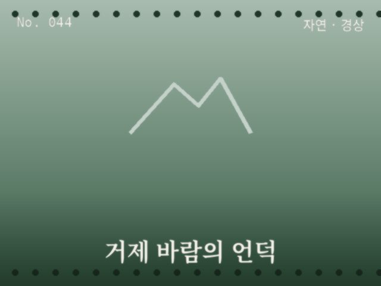
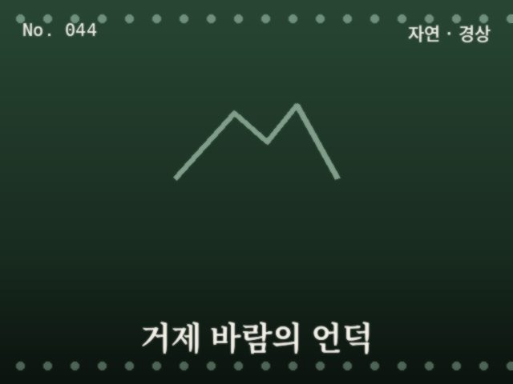

No. 044
풍차와 초원이 어우러진 해안 언덕


해안 절벽 위 넓은 초원에 풍차가 서 있는 언덕으로, 바다를 등지고 펼쳐진 초록빛 능선이 대표적인 촬영 포인트다.
추천 시간대 — 맑은 날 오후
촬영 팁 — 풍차와 초록 능선을 바다를 배경으로 넓게 담아보세요
이 사이트는 쿠키를 사용하여 광고 개인화 및 서비스 개선에 활용합니다. Google 애드센스는 쿠키를 사용해 관심기반 광고를 게재할 수 있습니다. 자세히 보기